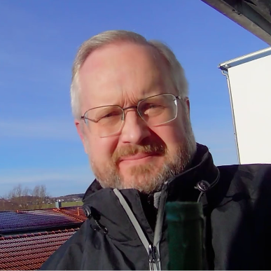

Joseph Gaßner
Buchungs- und Steuer-Mentor
Menschlichkeit vor Paragrafen
- ► WhatsApp: Nachricht schreiben
- ► E-Mail: mail@burn.tips
- ► YouTube: Kanal besuchen
- ► Instagram: @burn.tips

Menschlichkeit vor Paragrafen
Am 24.03.2026 bin ich auf der TAXarena unterwegs, um spannende Impulse zu sammeln und mein Netzwerk zu erweitern. Falls du wissen willst, was ich alles entdeckt habe und welche Kooperationen zu erwarten sind, gib mir kurz mit Hilfe dieser Visitenkarte Bescheid, vielleicht ganz einfach über WhatsApp.
Ich helfe dir, rechtssicher zu buchen. Programme gibt es viele – aber wen fragst du bei Unsicherheit? Ich biete 29 Jahre Erfahrung (Steuerfachwirt).
Kontakt am besten via WhatsApp für schnelle Terminabstimmung. Beratung idealerweise per Video-Telefonie (Viertelstunde: 19 €).
Scheue dich nicht zu fragen – ich sage vorher Bescheid, ab wann Kosten entstehen.
Ich unterstütze dich beim korrekten Ausfüllen von Steuerformularen. 16 Jahre Erfahrung als Steuerberater garantieren fundiertes Wissen.
Mein Tipp: Nutze meinen entwickelten Kontenrahmen, der laufende Buchhaltung und Einkommensteuererklärung perfekt verbindet.
Auch hier gilt: Beratung via Video (Viertelstunde: 19 €) und vorherige Kostentransparenz.
Hallo, ich bin Joseph – Ex-Steuerberater und heute leidenschaftlicher Buchungs- und Steuer-Mentor. Aus meiner langjährigen Praxis weiß ich: Hinter Bilanzen und Zahlenwerken stehen immer Menschen. Deshalb lautet mein Credo ganz klar: Menschlichkeit steht vor Paragrafen.
Heute helfe ich dabei, steuerliche Prozesse nicht nur fachlich sauber, sondern auch verständlich und greifbar zu machen. Schön, dass du hier bist!